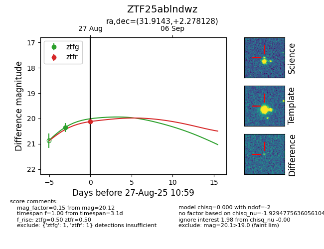

Target ZTF25ablndwz at 2025-08-27 11:24, see:
FINK: fink-portal.org/ZTF25ablndwz
Lasair: lasair-ztf.lsst.ac.uk/objects/ZTF25ablndwz
ALeRCE: alerce.online/object/ZTF25ablndwz
alt names
ZTF25ablndwz (ztf,fink)
coordinates:
equatorial (ra, dec) = (31.9143,+2.27813)
galactic (l, b) = (157.9231,-55.32903)
photometry
last ztfg=19.99, ztfr=20.12
2 ztfg, 1 ztfr detections
